Como fazer o dual boot no Linux
Feito o processo no Windows e hora de fazer o processo no Linux, a interface será um pouco diferente e alguns passos devem ser seguidos para efetuar o dual boot com sucesso. Lembrando que as imagens podem variar de acordo com a distribuição Linux que você está utilizando, aqui o processo foi feito utilizando a versão Linux Mint Cinnamon 20.3.
-
Depois de instalar o Windows chegou a hora de instalar o Linux. Você pode verificar se a ordem de inicializção na na BIOS está configurada de forma correta, e no Ventoy selecionando o "arquivo.iso" do Linux. Feito isso você chegará nessa tela e selecionará a primeira opção "Start Linux Mint".
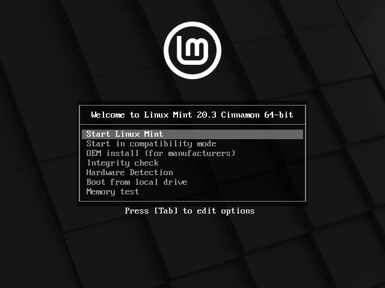
-
Nessa tela você poderá testar o Linux Mint diretamente da sua mídia bootável antes de seguir para a instalação se assim desejar.
Importante: seus arquivos não ficarão salvos depois que você fazer a instalação. Caso não queria testar basta clicar em "Install Linux Mint".
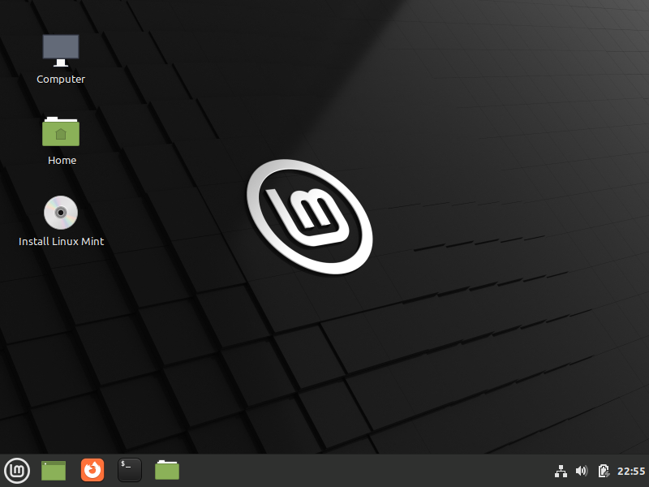
-
Selecione o idioma que deseja prosseguir.
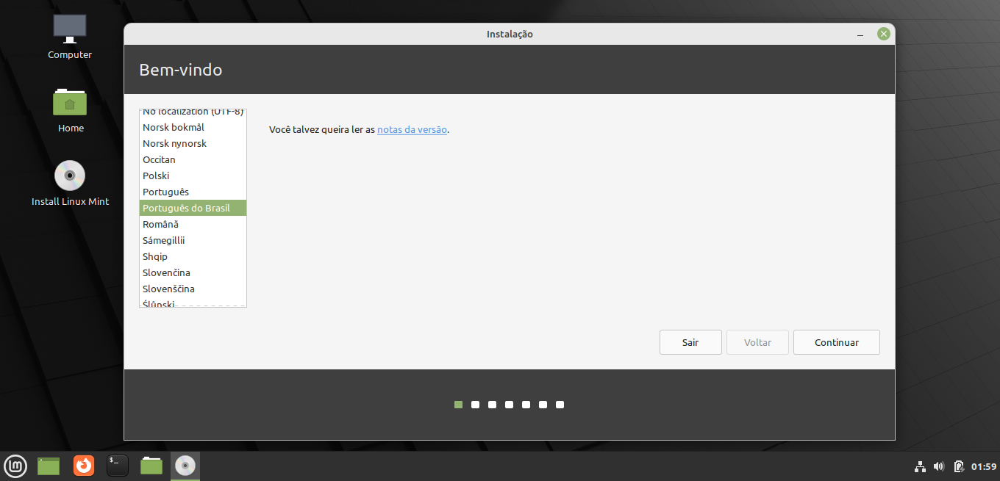
-
Selecione o layout de teclado que deseja prosseguir.
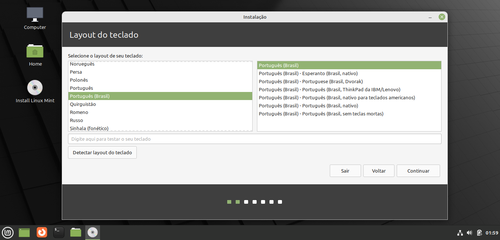
-
Caso você queira que alguns formatos de mídia sejam executados, marque essa opção. É bom marca-lá para não precisar instalar manualmente o leitor de alguns arquivos depois.
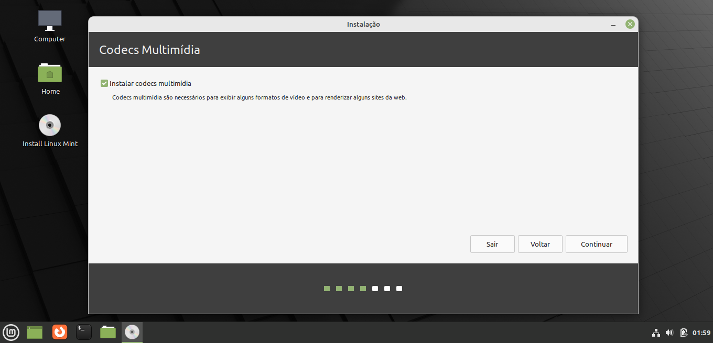
-
Aqui semelhante ao Windows, selecione "Opção avançada".
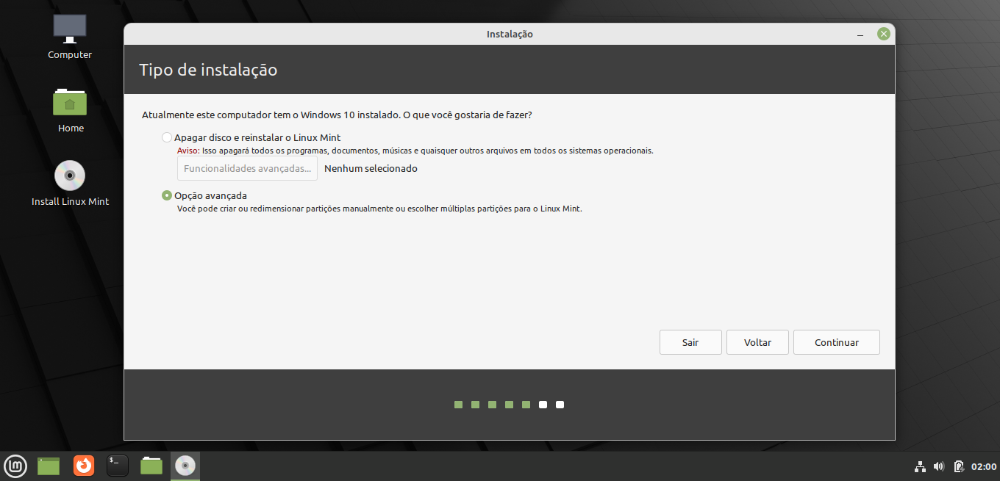
-
Chegando nessa tela você verá algo semelhante a imagem abaixo, aqui é muito importante você notar que as partições (no passo 10) que nós fizemos no Windows permanecem aqui, as primeiras partições é onde o Windows foi instalado.
Cuidado! Tenha muita atenção na hora de selecionar a partição, geralmente você instala-rá na segunda partição com a quantidade de espaço que você reservou para o linux. se você formatar a primeira apagrá o windows e terá que reiniciar todo o porcesso!
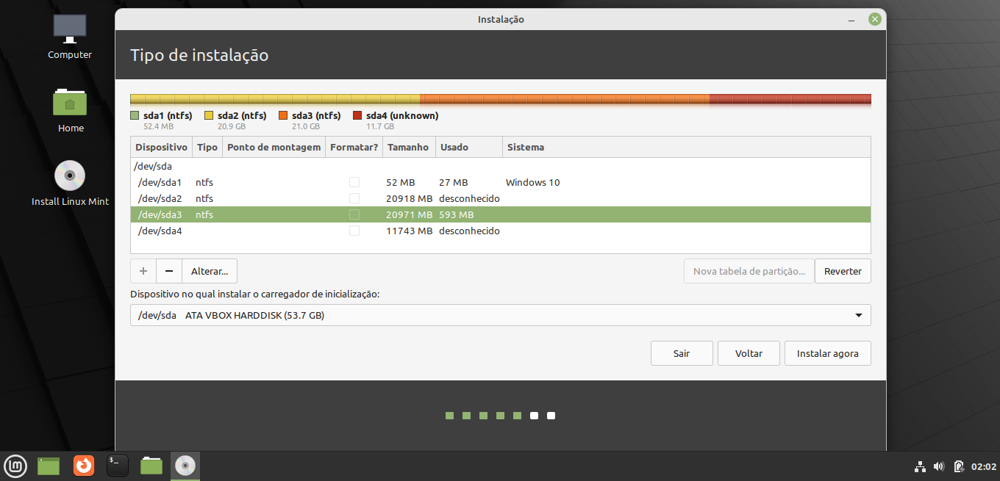
-
Selecionada corretamente a partição clique com o botão direito do mouse e clique em "Apagar".
-
Com a a partição apagada você clicará como o botão direito e clicará em "Adicionar".
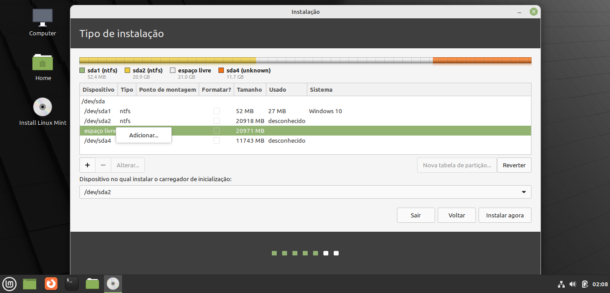
-
Abrindo essa tela coloque o tamanho dessa partição em 512MB deixe as opções "Lógica" e "Início deste espaço" marcadas. Em "Usar como" selecione "Sistema de arquivos "journaling" ext4".
E em "Ponto de montagem" selecione "/boot".
Clique em "Ok" e pronto.
-
Repita o processo de apertar com o botão direito do mouse na partição com espaço livre, clique em "Adicionar" novamente e aí naquela tela vá em "Usar como" e selecione "Área de troca (swap)".
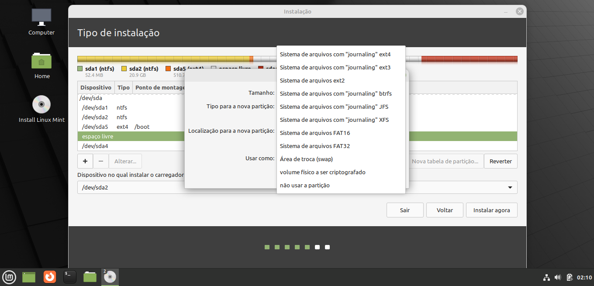
-
Após isso defina o tamanho da partição SWAP aqui eu coloquei 1000MB (Cerca de 1GB), o ideal é não passar de 4000MB (4GB), deixe as opções padrão marcadas e clique em "Ok".
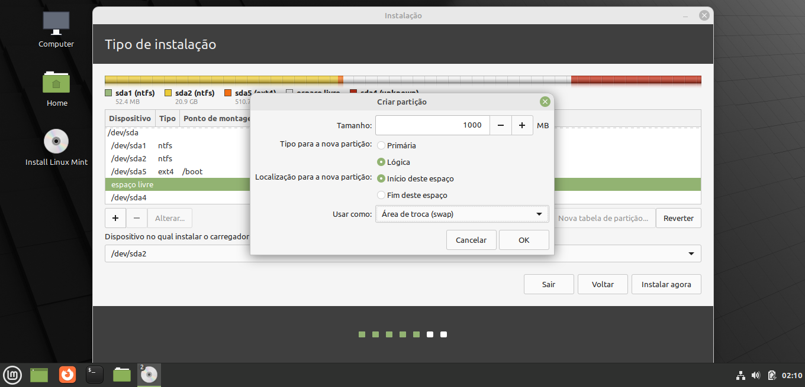
-
Repita o processo de apertar com o botão direito do mouse na partição com espaço livre, clique em "Adicionar" novamente.
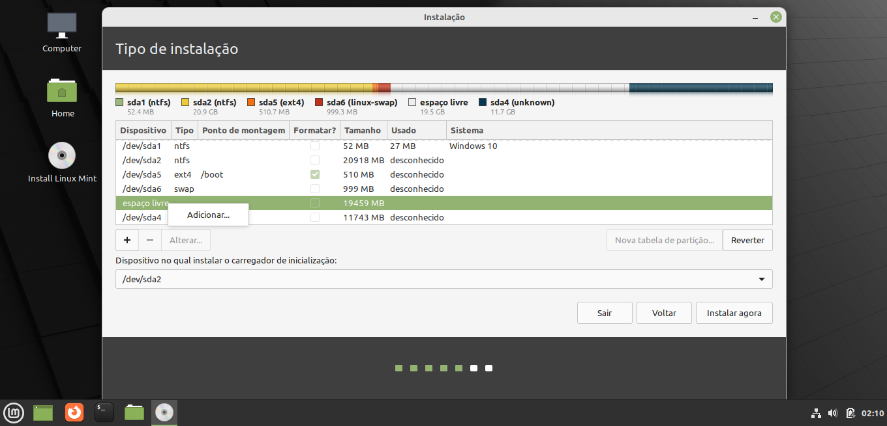
-
Abrindo essa tela coloque o tamanho dessa partição o total disponível, deixe as opções "Lógica" e "Início deste espaço" marcadas. Em "Usar como" selecione "Sistema de arquivos "journaling" ext4".
E em "Ponto de montagem" selecione "/".
Clique em "Ok" e pronto.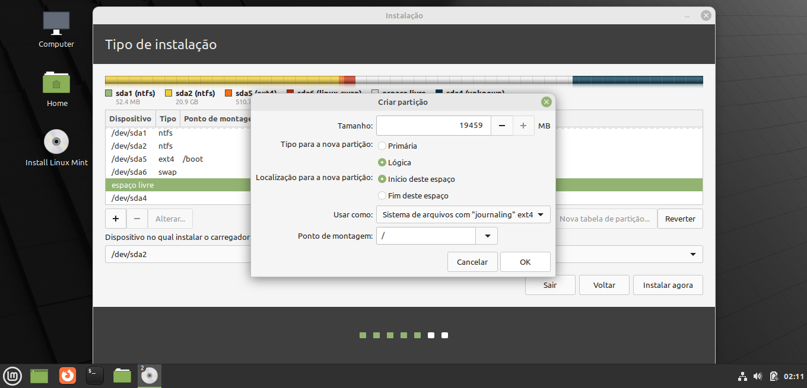
-
Nessa tela tudo já estará feito e agora basta a instalação do Linux, na partição que foi criada no passo anterior, clique em "Instalar Agora".
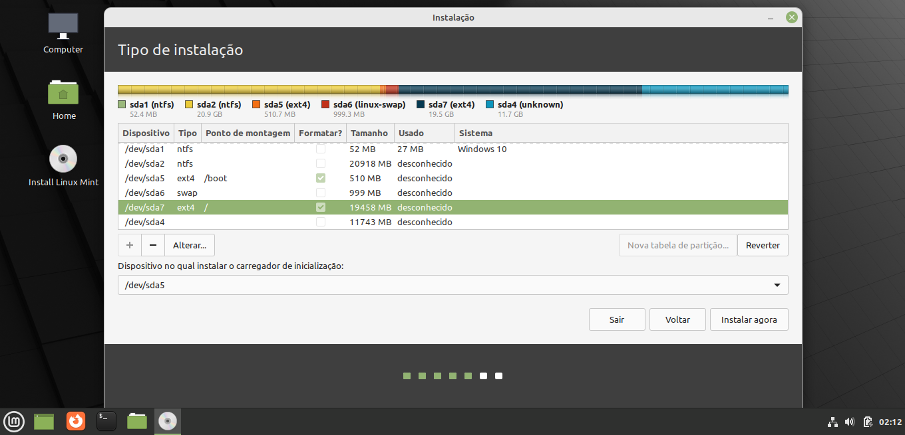
-
Clique em "Continuar".
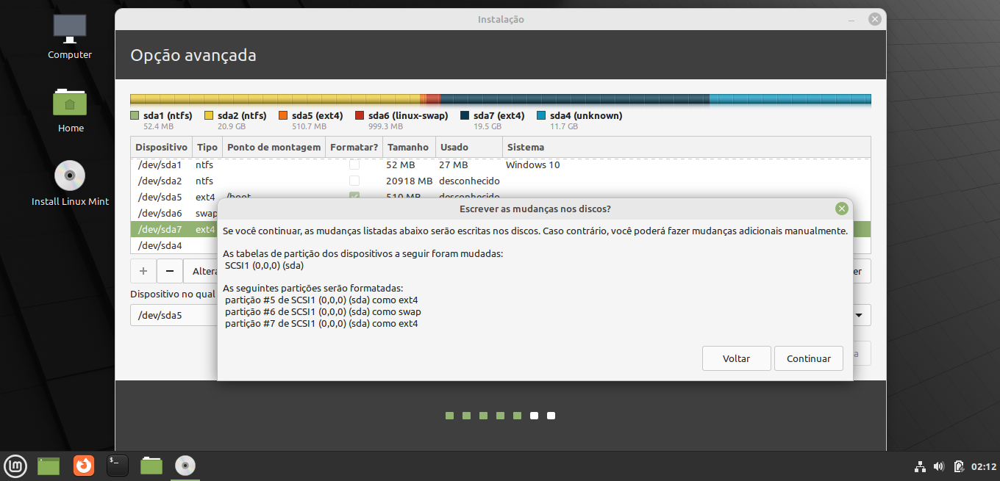
-
Selecione o fuso horário desejado e clique em "Continuar".
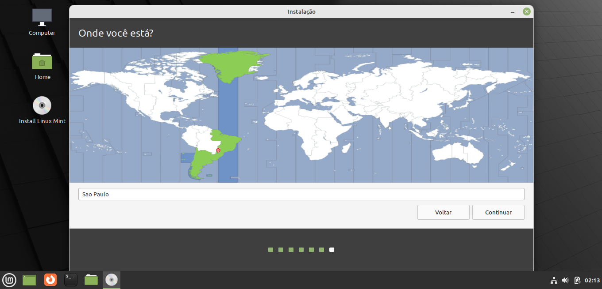
-
Faça a criação do usuário e clique em "Continuar".
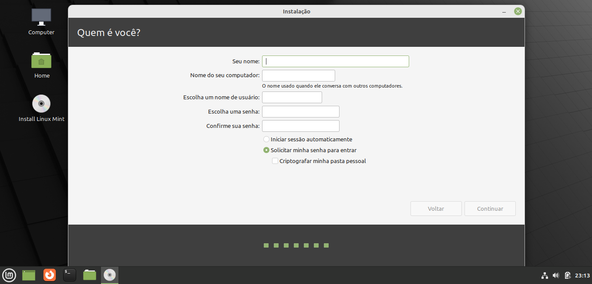
-
Aqui espere a instalação do Linux Mint. Isso pode demorar algum tempo assim como no Windows.
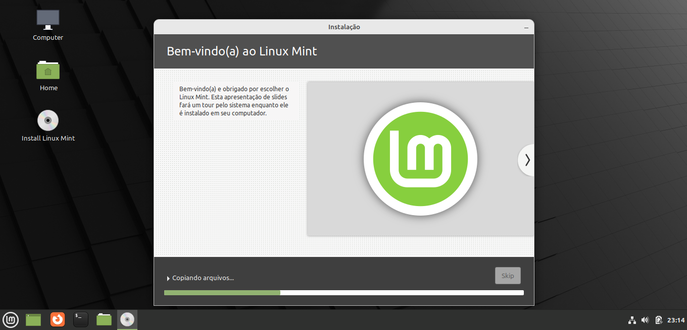
-
Depois da instalação concuída clique em "Reiniciar Agora".
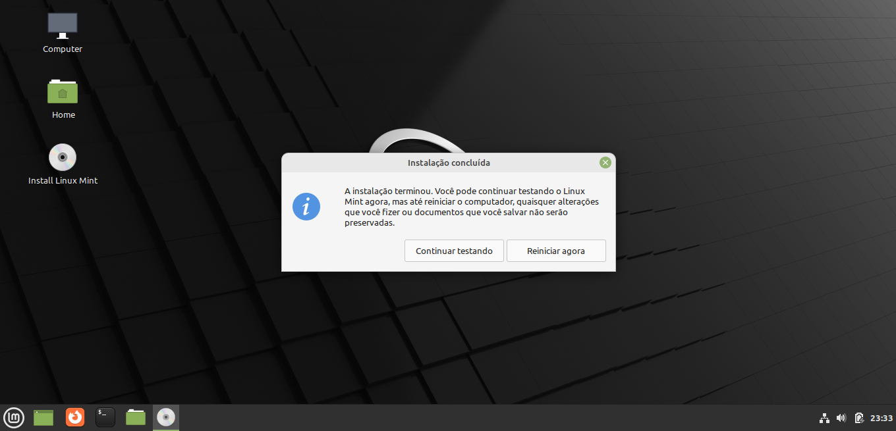
-
Aqui apenas remova a sua mídia bootável do seu computador aperte "Enter" e espere.

-
Parabéns agora você tem o dual boot feito em sua máquina e pode usa-lá como preferir, mas espere e a partição de arquivos? Isso nós vamos configuraremos lá no Windows na próxima página
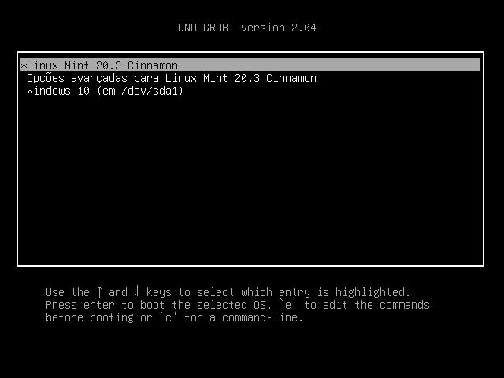